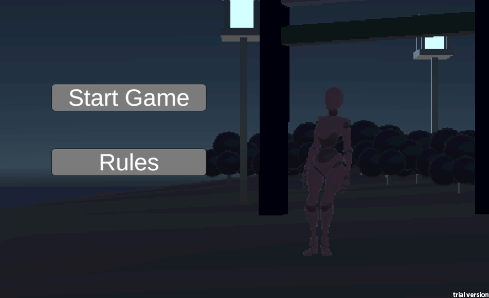
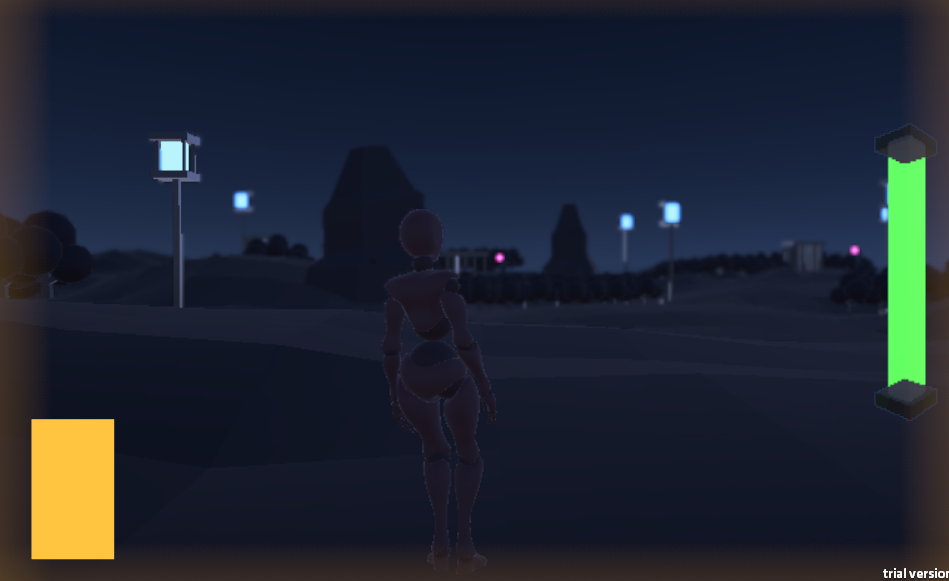
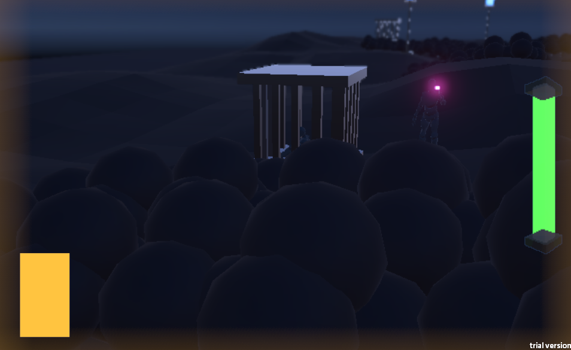
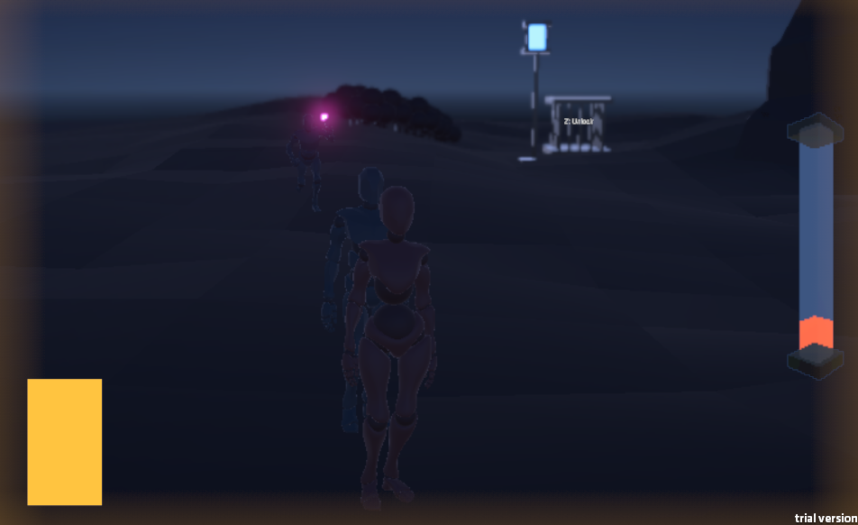

Prison Island
介紹
Prison Island 是為大學程式設計專案製作的遊戲。我的任務是在不到個兩月的時間內翻新一個現有遊戲，同時為其遊戲玩法增添一些小的變化。
我選擇翻新 Sockpop 的遊戲「Grey Scout」。這個遊戲包含大量的潛行元素，要求玩家躲在灌木叢中躲避警衛， 同時試圖救出其他囚犯並將他們帶回船上。
只是一位遊戲設計師和數位藝術家。
Prison Island 是為大學程式設計專案製作的遊戲。我的任務是在不到個兩月的時間內翻新一個現有遊戲，同時為其遊戲玩法增添一些小的變化。
我選擇翻新 Sockpop 的遊戲「Grey Scout」。這個遊戲包含大量的潛行元素，要求玩家躲在灌木叢中躲避警衛， 同時試圖救出其他囚犯並將他們帶回船上。
遊戲由一個大型關卡構成，其中有五個裝有囚犯的籠子。玩家需要前往每個籠子，釋放籠子內的囚犯， 並將囚犯帶回船上。然而，每個籠子附近都有一名警衛，玩家必須避免被警衛看到。 如果警衛看到玩家，它會追逐玩家。玩家可以躲在灌木叢中躲避被發現。
作為遊戲的變化，我創建了一個機制，允許玩家抽取卡片，每張卡片都具有獨特的屬性， 既有益或者妨礙玩家。




這是我第一次創建一個充滿遊戲玩法的3D遊戲，跨出了我制作2D專案的經驗範疇。我學會了如何使用後期處理層 來創建更有氛圍的環境。我也學會了如何在Unity使用骨架模型和導入骨架動畫。我也嘗試了 Unity 中的 NavMeshes 來實現警衛的移動。
與以前的專案類似，我也複習了在囚犯和警衛代理上使用狀態機，以及使用 Raycast 進行 警衛偵測。